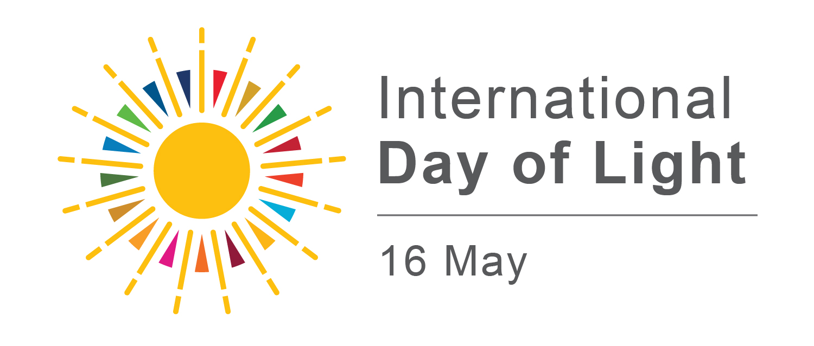

About the Photovoice Initiative
This Photovoice initiative explores how neurodivergent individuals experience light sensitivity in their daily lives.
Light plays an important role in regulating sleep, the internal body clock, mood, alertness, and overall wellbeing. Many neurodivergent individuals report heightened sensitivity to light, yet these lived experiences are rarely documented.
Through photography and short written reflections, this project invites participants to share how light affects their lives - during the day and at night.
Participants will document their experiences of light in their everyday environments and may wish to reflect on prompts such as:
- The role of light in my sleep and daily patterns
- How light makes me feel
- Light and my energy levels
- Daylight and artificial light in my environment
- My favourite and less favourite lighting environment
- How different lighting conditions affect my behaviour (e.g., stimming, focus, comfort)
The project aims to highlight lived experiences and raise awareness about the role of light in neurodiversity and wellbeing. Selected contributions will be shared in an online public Gallery and may contribute to future research and public engagement activities.
The Photovoice initiative is part of the Photo_ND project, a DkIT–Maynooth University Research Collaboration Seed Fund, supported by the Technological Sector Advancement Fund, Higher Education Authority.
What to expect
Photovoice is a participatory research method that combines photography and personal storytelling.
You will be invited to:
- Take one photo that represents your experience of light sensitivity
- Write a short description explaining what it shows
- Upload your photo and text via an online form
This should take approximately 10–20 minutes.
Participation is entirly voluntary.
Some participants may find reflecting on their experiences of light sensitivity emotionally challenging.
You are free to stop at any time.
When you are ready, you will be asked to read an information sheet and provide consent before uploading your photo.
Your photo & description may be displayed in the online public Gallery and used in research and public engagement outputs (e.g. publications or presentations).
Eligibility
This initiative is open to people who identify as neurodivergent (e.g., autistic, ADHD, dyslexic, etc.), whether self-identified or formally diagnosed.
We kindly ask that only individuals who identify as neurodivergent take part, so that the project reflects these lived experiences.
Participants must be 18 years or older.
Guidelines for taking photos
⚠️ Important: To protect your privacy and the privacy of others, please carefully follow these guidelines.
✅ What you can do
- Focus on light, atmosphere, and surroundings
- Take photos of places, environments, or public settings (e.g., parks, streets)
- Avoid including people in your photos. If people are present, they must not be identifiable under any circumstances
- Please respect privacy
❌ What to avoid
- Please do not take photos of people who can be clearly recognised, even in public places
- Do not photograph children or anyone under 18 years old
- Avoid taking photos in unsafe, risky, or sensitive situations
- Avoid taking photos of private property
- Avoid taking photos of personal belongings, if they could reveal identifiable information
👉 For safety and privacy, we strongly recommend not including people in your photos at all.
Award
A panel of judges will select one winning entry in each of the following three categories:
- My Light, My Night – Lived Experience Award
- My Light, My Night – Research Choice Award
- My Light, My Night – Visual Story Award
In addition, two special mentions will be awarded, each receiving a €50 voucher.
Winners will be contacted using the email address provided during submission.
Key dates

Team
- Ellis Byrne – Research Assistant & Photovoice Facilitator, Department of Psychology, Maynooth University, Ireland
-
Dr Giulia Gaggioni – MSCA COFUND NeuroInsight Research Fellow & Project Lead, FutureNeuro Research Ireland Centre, Department of Biology, Maynooth University, Ireland
Dr Gaggioni is supported by in part by a research grant from Science Foundation Ireland (SFI) under Grant Number 21/RC/10294_P2 and co-funded under the European Union’s Horizon 2020 research and innovation programme under the Marie Skłodowska-Curie grant agreement No 101034252. - Dr Kelly McErlean – Lecturer & Project Co-lead, School of Informatics and Creative Arts, Dundalk Institute of Technology, Ireland
Contact
For any questions about the My Light, My Night photovoice initiative, please contact:
Join & upload your photo
To take part in this project:
- Read the Participant Information Sheet
- Provide informed consent
- Upload your photo and short description
*****insert the Jisc OS link here*****
Before taking part, please note:
- Participation is voluntary
- You may withdraw at any time before submitting your entry
- Your submission may be included in a online public gallery and in research and public engagement outputs
- Do not upload images containing identifiable individuals or sensitive information
If you have any questions before participating, please contact the research team.